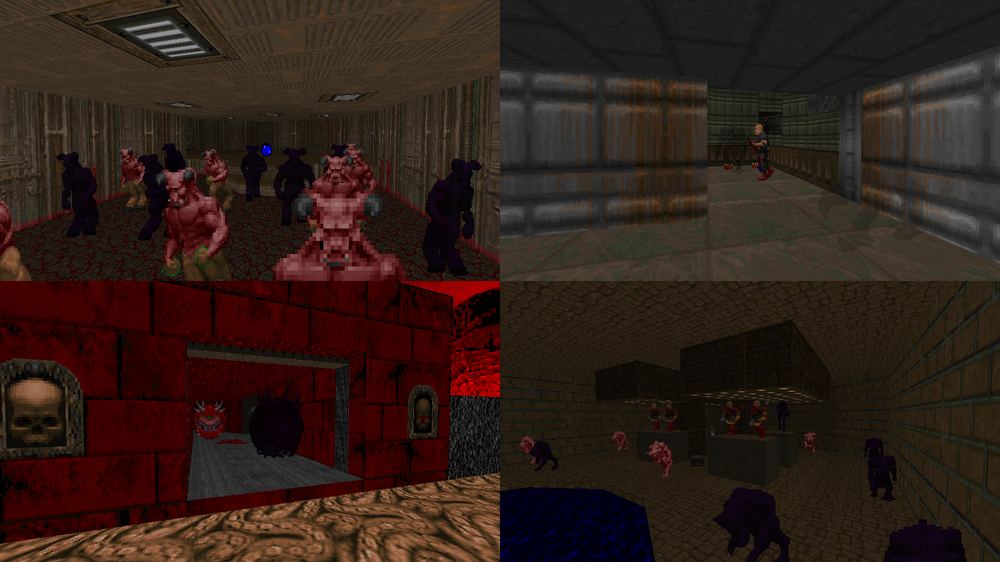

DOWNLOAD LINKS



| Year | 2021 |
| IWAD | Any commercial Doom IWAD |
| Source port | GZDoom |
| Game mode(s) | N/A |
| Map(s) | N/A |
Always Sometimes Nightmares is a gameplay mini-mod for GZDoom. The premise is about as simple as it gets: the demons have Nightmare variants that you have a chance of running into. Nightmare monsters are more dangerous versions of the standard demons, providing a degree of extra challenge. ‘Nuff said.